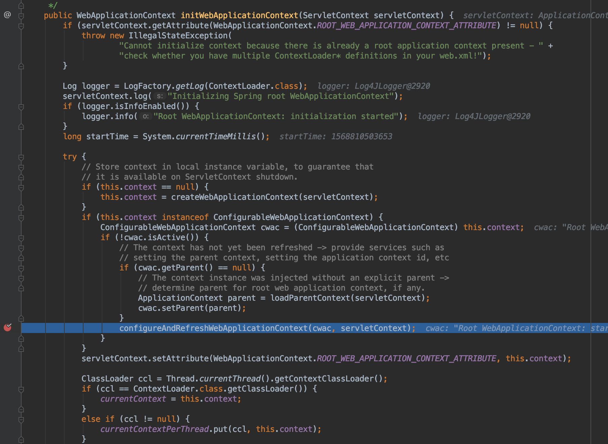
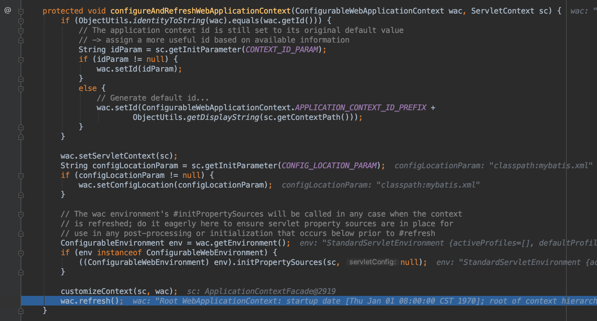
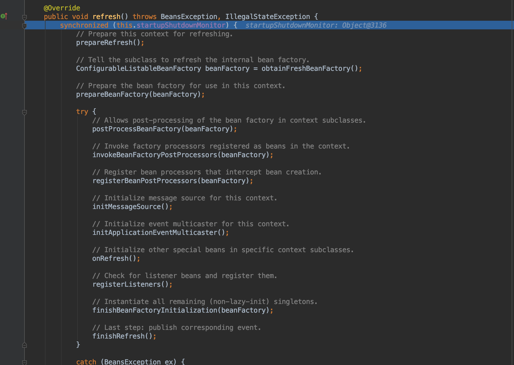
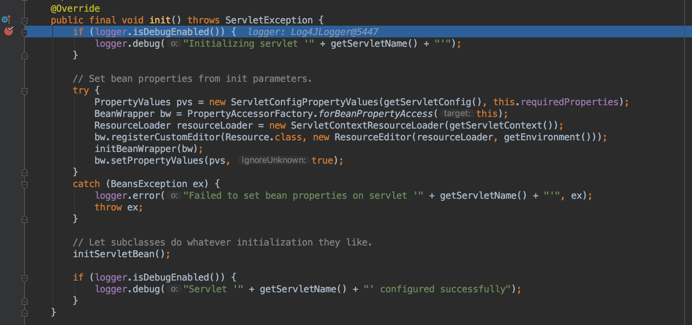
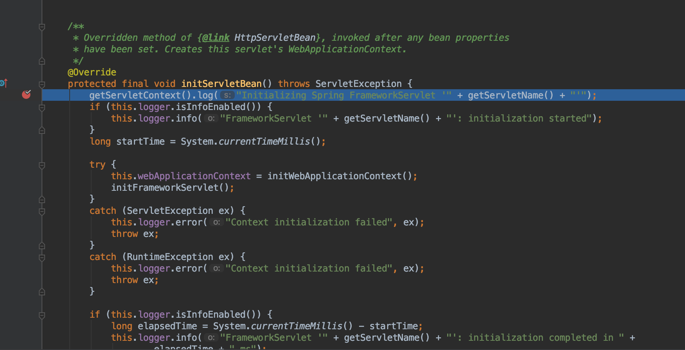

Spring MVC项目初始化
0x01 前言
我们都知道启动一个Spring MVC项目，需要类似Tomcat的容器支持。Tomcat是一种Servlet容器用于启动Java web项目，而启动一个项目的入口就是web.xml配置文件。在web.xml中主要是为了配置项目中使用的Servlet、Filter和Listener，并对这几种角色进行初始化。这几种角色的作用就不多说了。本文的重点放在项目启动过程，也就是项目初始化。
0x02 web.xml配置文件
针对一个Spring MVC项目，需要在web.xml中加载Spring配置文件。初始化的方式有两种：
第一种，使用
Listener进行初始化
1 | <context-param> |
第二种，使用
DispatcherServlet进行初始化
1 | <servlet> |
对于第一种方式，使用ContextLoaderListener监听ServletContext初始化时执行，根据context-param的值读取Spring配置文件进行初始化。关于为什么可以使用Listener进行初始化，可以参考Java Web Listener这篇文章。这种方式初始化得到的是Application Context。
而第二种方式，是Spring MVC项目更为常见的，因为Spring MVC项目都需要使用DispatcherServlet分发请求。通过init-param加载配置文件进行初始化。这种方式得到的上下文是WebApplicationContext，它是ApplicationContext的子上下文环境。
0x03 初始化过程
本文同时使用两种加载配置方式进行初始化，从源代码的层面熟悉整个初始化过程。当然，以我目前的水平只能大致了解一下初始化过程，里面很多详细的过程还没有深究。



前面的大致过程是初始化上下文信息，生成ApplicationContext。

最后来到refresh方法，这里才是初始化重要的位置。顺序来说就是根据配置文件的位置读取到配置文件生成资源文件，然后对这个资源文件进行解析生成BeanFactory。BeanFactory就是对Bean进行管理的地方。默认Bean的Scope都是Singleton，所以初始化得到的都是单例。
初始化ApplicationContext之后，web容器便会对Filter进行初始化，初始化的过程是调用init方法。最后才是Servlet,同样是调用init方法。（初始化顺序：Listener -> Filter -> Servlet) 所以初始化Filter完成之后，便会对DispatcherServlet进行初始化。由于DispatcherServlet本身并没有init方法，所以会调用父类HttpServletBean的方法。DispatcherServlet是一个多层继承的子类，HttpServletBean不是直接父类。

然后会调用FrameworkServlet的initServletBean方法。

在initServletBean方法中调用initWebApplicationContext方法，从这里开始的初始化过程与上述基本相同，都是读取配置文件生成上下文环境和对应的BeanFactory。
在加载配置文件的过程中有两个核心类：DefaultListableBeanFactory 和 XmlBeanDefinitionReader。
0x04 Spring配置文件读取
DefaultListableBeanFactory：Bean加载的核心部分，是多个功能的结合。
1、AliasRegistry：定义对alias的简单增删改操作
2、SingletonBeanRegistry：定义对单例的注册和获取
3、BeanFactory：定义获取bean及其属性
4、BeanDefinitionRegistry：定义对BeanDefinition的各种增删改操作
5、ConfigurableBeanFactory：提供配置Factory的各种方法
6、ListableBeanFactory：根据各种条件获取bean的配置清单
7、AutowireCapableBeanFactory：提供创建bean、自动注入、初始化以及应用bean的后处理器
DefaultListableBeanFactory是结合上面所有接口功能的实现类，其中也有针对不同功能也有不同的实现类。
XmlBeanDefinitionReader:针对XML配置文件的读取
1、ResourceLoader：定义资源加载器，主要应用于根据给定的资源文件地址返回对应的Resource
2、BeanDefinitionReader：主要定义资源文件读取并转换为BeanDefinition的各个功能
3、EnvironmentCapable：定义获取Environment方法
4、DocumentLoader：定义从资源文件加载转换为Document的功能
5、BeanDefinitionDocumentReader：定义读取Document并注册BeanDefinition功能
6、BeanDefinitionParserDelegate：定义解析Element的各种方法
XML配置文件的读取过程：
1、通过实现EnvironmentCapable和BeanDefinitionReader中的方法，使用ResourceLoader将资源文件路径转换为对应的Resource文件
2、通过DocumentLoader对Resource文件进行转换，将Resource文件转换为Document文件
3、通过实现接口BeanDefinitionDocumentReader的DefaultBeanDefinitionDocumentReader类对Document进行解析，并使用BeanDefinitionParserDelegate对Element进行解析
总的来说，这两个核心类，一个是根据配置文件进行解析功能实现，另一个是根据得到的解析结果进行bean的加载、配置、管理功能实现。两个类都是在层层接口定义的基础上，结合不同组件的功能，共同实现最后的目的。